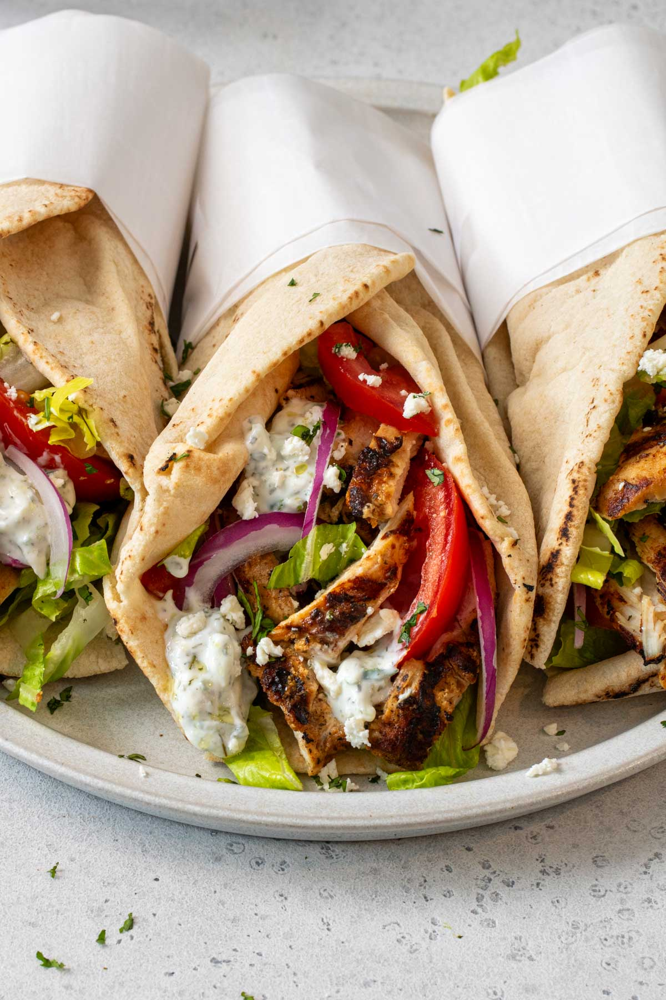

Gyros

Ingredients:
- 1 lb chicken breast, thinly sliced
- 2 tbsp olive oil
- 1 tbsp red wine vinegar
- 2 cloves garlic, minced
- 1 tsp dried oregano
- Salt and pepper to taste
- Pita bread
- Tzatziki sauce
- Sliced tomatoes, onions, and lettuce for garnish
Steps:
- In a bowl, combine olive oil, red wine vinegar, garlic, oregano, salt, and pepper. Add the chicken slices and marinate for at least 30 minutes.
- Heat a skillet over medium-high heat. Cook the marinated chicken until fully cooked and slightly charred, about 5-7 minutes.
- Warm the pita bread in a dry skillet or oven.
- Assemble the gyros by placing cooked chicken on the pita bread. Top with tzatziki sauce, sliced tomatoes, onions, and lettuce.
- Fold the pita around the fillings and serve immediately.
Home